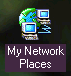
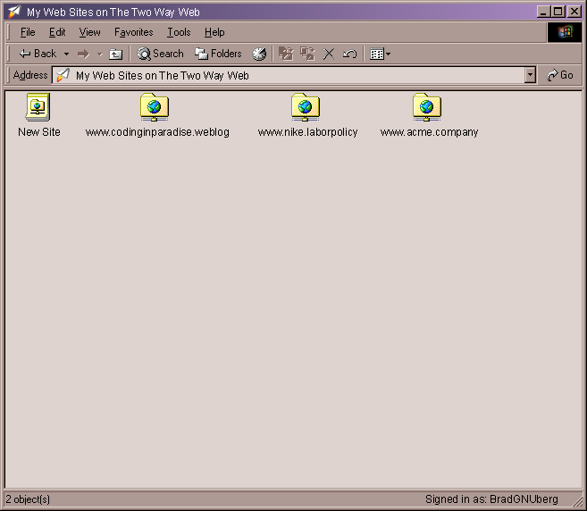

| | |
Table of Contents | Last | Next
Walkthrough - Seamless Collaboration
Powerful Integration with Windows
Paper Airplane deeply integrates with Windows by making the Two Way Web Sites that you are a member of appear as folders on your hard-drive. You can open these Two Way Web Site folders and use third-party applications, such as Macromedia Dreamweaver or Microsoft Word, to save and load pages right from your Two Way Web Sites.
To do this first double-click the My Network Places icon on your Windows desktop:

My Network Places Icon
Double-click this icon to see network places that you can interact with as if they were folders on your hard-drive:

Top-Level of My Network Places
Double-click the My Web Sites on the Two Way Web icon to see the Two Way Web sites that you are a member of:

My Web Sites on the Two Way Web
Double-click a Two Way Web Site name to view, add, and delete pages just as you would with the Window File Explorer now:

Looking into a My Network Places Folder
Load and save files from your Two Way Web Sites using programs that don't know anything about Paper Airplane. For example, the screenshot below shows the Save As dialog for Microsoft Word after navigating to the My Web Sites on the Two Way Web folder in My Network Places:

Microsoft Word Save As Dialog